The term scagnostics refers to scatter plot diagnostics, originally described by John and Paul Tukey. This is a collection of techniques for automatically extracting interesting visual features from pairs of variables. This package is an implementation of graph theoretic scagnostics developed by Wilkinson, Anand, and Grossman (2005) in pure R and is designed to be easily integrated into a tidy data workflow.
The cassowaryr package provides functions to compute
scagnostics on pairs of numeric variables in a data set.
The package’s primary use is as a step in exploratory data analysis, to give users an idea of the shape of their data and identify interesting pairwise relationships.
The package can be installed from CRAN using
install.packages("cassowaryr")
and from GitHub using
remotes::install_github("numbats/cassowaryr")
to install the development version.
The usage is illustrated with the package’s example data, datasauRus
dozen. This data is also available in the datasauRus package. There are
several pairs of variables that have with the same mean, variance and
correlation but strikingly different visual features. We will use a
handful of these pairwise plots to show the best way to utilise the
cassowaryr package. Here is a plot of the selected
datasauRus dozen plots:
library(cassowaryr)
library(ggplot2)
library(dplyr)
#>
#> Attaching package: 'dplyr'
#> The following objects are masked from 'package:stats':
#>
#> filter, lag
#> The following objects are masked from 'package:base':
#>
#> intersect, setdiff, setequal, union
# pick examples
exampledata <- datasaurus_dozen %>%
filter(dataset %in% c("slant_up", "circle", "dots", "away"))
#plot them
exampledata %>%
ggplot(aes(x=x,y=y, colour=dataset))+
geom_point() +
facet_wrap("dataset") +
theme_minimal() +
theme(legend.position = "none", aspect.ratio=1)From a data frame, there are several ways to calculate scagnostics.
If we simply have two variables we wish to calculate several scagnostics
on, we use the calc_scags function and pass through the two
variables as vectors.
calc_scags(exampledata$x, exampledata$y, scags=c("clumpy2", "convex", "striated2")) %>%
knitr::kable(digits=4, align="c")| striated2 | clumpy2 | convex |
|---|---|---|
| 0.1853 | 0 | 0.5707 |
If instead we have a data frame with two variables and a grouping
variable (a long form of a data set) then we can use the
calc_scags function to get the scagnostics for each
group.
longscags <- exampledata %>%
group_by(dataset) %>%
summarise(calc_scags(x, y, scags=c("clumpy2", "convex", "striated2", "dcor")))
longscags %>%
knitr::kable(digits=4, align="c")| dataset | striated2 | clumpy2 | convex | dcor |
|---|---|---|---|---|
| away | 0.0956 | 0.0000 | 0.5721 | 0.1326 |
| circle | 0.5255 | 0.0000 | 0.0091 | 0.2292 |
| dots | 0.1654 | 0.9932 | 0.0010 | 0.1266 |
| slant_up | 0.0942 | 0.8623 | 0.2372 | 0.1932 |
Finally, if we have a wide data set consisting of only numerical
variables, we can use the calc_scags_wide to find the
scagnostics on every pairwise combination of variables.
exampledata_wide <- datasaurus_dozen_wide[,c(1:2,5:6,9:10,17:18)]
widescags<- calc_scags_wide(exampledata_wide, scags=c("clumpy2", "convex", "striated2", "dcor"))
head(widescags, 4) %>%
knitr::kable(digits=4, align="c")| Var1 | Var2 | striated2 | clumpy2 | convex | dcor |
|---|---|---|---|---|---|
| away_y | away_x | 0.0956 | 0.0000 | 0.5721 | 0.1326 |
| circle_x | away_x | 0.1111 | 0.5222 | 0.6742 | 0.3839 |
| circle_x | away_y | 0.0857 | 0.2211 | 0.8105 | 0.1142 |
| circle_y | away_x | 0.1103 | 0.8403 | 0.2946 | 0.0818 |
If the resulting scagnostic data set is small enough, we can find interesting scatter plots by simply looking at the table, however this is often not the case. If we want to find pairwise plots that are different to the others, we can find outliers on combinations of the scagnostics using an interactive scatter plot matrix (SPLOM). The code (but not the output) on how to do this is shown below:
library(GGally)
library(plotly)
splom_data <- widescags %>%
mutate(lab = paste0(Var1, " , ", Var2)) %>%
select(-c(Var1, Var2))
p <- ggpairs(splom_data, columns=c(1:4), aes(label=lab)) +
theme_minimal()
ggplotly(p) There are several functions that can summarise the scagnostics
results. Using top_pairs allows us to find the top
scagnostic for each pair of variables, while top_scags
finds the top pair of variables for each scagnostic. Their usage is
similar and looks like:
| Var1 | Var2 | scag | value |
|---|---|---|---|
| dots_y | circle_y | clumpy2 | 0.9948 |
| slant_up_y | circle_x | convex | 0.8393 |
| slant_up_y | dots_y | dcor | 0.9167 |
| circle_y | circle_x | striated2 | 0.5255 |
Occasionally we will get unexpected results for a scagnostic. To
diagnose a scagnostic result, the package has several draw functions
that will plot the graph based objects that are used to construct the
measures: draw_alphahull(), draw_convexhull()
and draw_mst(). Below shows the MST drawn for the
dots pair of variables in the
datasaurus_dozen, and it can be seen to have some
difficulty, as would be expected, defining the MST when all points are
equidistant.
drawexample <- exampledata %>%
filter(dataset== "dots")
draw_mst(drawexample$x, drawexample$y, alpha=0.2) + theme_minimal()
Tukey, J. W. and Tukey, P. A. (1985). “Computer graphics and exploratory data analysis: An introduction”, In Proceedings of the Sixth Annual Conference and Exposition: Computer Graphics’85, 3:773-785. National Computer Graphics Association, Fairfax, VA.
Wilkinson, L., Anand, A. and Grossman, R. (2005) “Graph-theoretic scagnostics”, IEEE Symposium on Information Visualization, 2005. INFOVIS 2005., pp. 157-164, doi: 10.1109/INFVIS.2005.1532142.